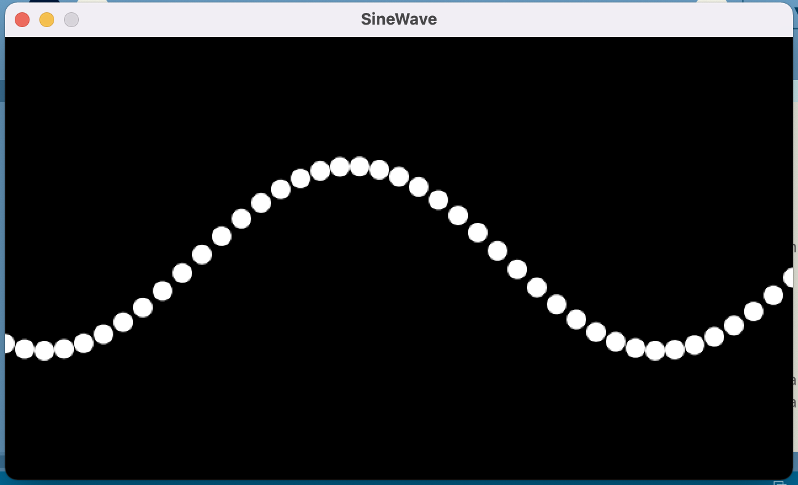

Preparation
This last week we are going to put together our gained knowledge about hardware, processing and Arduino together to let the computer control the environment and to control the computer by the environment. That way, we can create a connection between the physical and the real. In order to achieve this, we need to understand the way the arduino can send and receive data.
- Study this guide (popup warning) to get an idea of how serial communication works.
- In the Arduino program, open File -> Examples -> 04.Communication -> Dimmer and study the code. You don't have to run it per se, but make sure you understand what is going on.
- Have a look at the documentation for map and for lerpColor. Study the code below (or download it here); make sure you understand at least the basic idea of what is going on here.
- Copy the code in your Processing application and run it. Move your mouse over the gradient and see the numbers in the console of Processing increasing when you go from left to right.
void setup() {
size(600, 300);
for (int i = 0; i <= width; i++) {
float inter = map(i, 0, width, 0, 1);
color c = lerpColor(color(0), color(255), inter);
stroke(c);
line(i, 0, i, height);
}
}
void draw() {
println (mouseX);
}
Exercises
Exercise 1
In this and the next exercise, we are going to use Processing to control the LEDs on the breadboard. To start offf, you need to recreate the example that was presented during the planary part. Upload the Dimmer-example to your Arduino set and make sure you understand what it is doing. Next, recreate the circuit that is drawn and displayed below.
Add the following to the setup() in your Processing code (you probably need to change the number between the squared brackets to match your setup):
serial_port = new Serial (this, Serial.list()[1], 9600);
Add the following to the loop() method:
serial_port.write( (255*mouseX / width));
Run the Processing code and move your mouse from the left to the right. Do you see what is happening with the LED...?
Exercise 2
Now, re-open the Processing sketch with the four buttons you have been working on in week 2. Remove any code you might have created in order to make the background the same color as the button you clicked on, but keep the click-check.
Create a circuit on your Arduino board with three LEDs: a green one, a yellow one and a red one. Assign all these LEDs to a different port-number (to make life easier, you should use three ports below number 10). Make use of the example above to have Processing communicate with the Arduino which button (red, yellow or green) has been pressed. You need to create your own communication protocol, e.g. when red is pressed a 1 is send to the Arduino. Now, have the corresponding LEDs go on when the button on Arduino is pressed.
As has been explained in the planairy part, you cannot just send numbers to (and from) the Arduino. The data is transmitted as hexadecimal ASCII values, so you need the take that in account in your communication protocol.
Can you enhance this example by having the corresponding LED blink? Extra challenge: can you even do this without changing the Arduino-code, using the knowledge we have gained in week 1?
Exercise 3
In this exercise, we are going to do the communication the other way around. We are going to use data from the Arduino to control events on Processing.
In processing, open Files -> Examples -> Math -> SineWave and study the code. When you run it, you get a nice display of a moving sine wave. Can you see the parameter that is responsible for the height of this wave? Experiment with different values for that parameter to determine its maximum and minimum values.

Study the Arduino example that you can find here and recreate it using your own hardware. There are no buzzers in your set, but some are available in the classroom. Note: there is actually an error in the code given in the example; see if you can spot it...
In the example, the Arduino is printing the measured distance to the serial monitor. Change this output so that it is only printing the numbers (without all the other text). Add communication code to the SineWave-example (you need to put it somewhere else in orde to be able to save it) so that it listens to the serial port. Have a look at this documentation to get an idea of how this works.
In the draw()-method, make use of the data the Arduino is transmitting to change the parameter that is responsible for the height of the sine wave. Now, when you get closer to the distance sensor, the sine wave will get a bigger amplitude. You probably need to do some math in order to limit this variable to its maximum and minimum values.
Assignment
As this is the last normal workshow, there is no assignment for next week. However, be sure to work on the assessment – you will be presenting that in two weeks time.